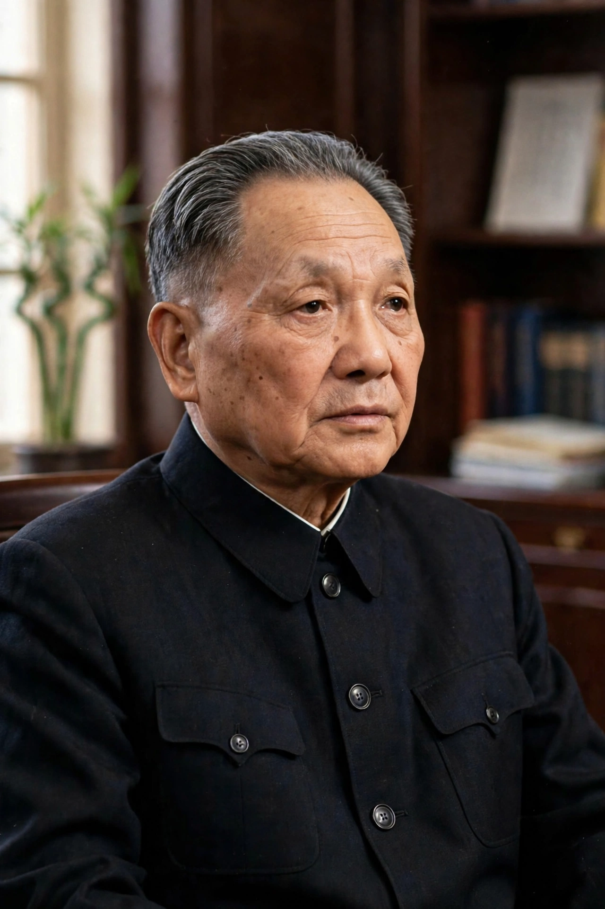

Deng Xiaoping (22 August 1904 – 19 February 1997) was a Chinese statesman, revolutionary, and political theorist who served as the paramount leader of the People's Republic of China from December 1978 to November 1989. After the death of Mao Zedong, Deng rose to power and launched the "reform and opening up" programme that introduced market mechanisms into China's planned economy, setting the country on the path to becoming the world's second-largest economy. His political philosophy, Deng Xiaoping Theory, is enshrined in the constitution of the Chinese Communist Party.

| Deng Xiaoping | |
|---|---|
| Born | 22 August 1904, Guang'an, Sichuan, Qing China |
| Died | 19 February 1997 (aged 92), Beijing, China |
| Office | Paramount leader of China (1978–1989); Chairman of the Central Military Commission (1981–1989) |
| Party | Chinese Communist Party |
| Known for | Reform and opening up; "socialism with Chinese characteristics" |
Deng was born in Guang'an, Sichuan, and as a teenager joined the work-study programme in France, where he worked in factories, met Zhou Enlai, and joined the Communist movement. He studied briefly in Moscow, returned to China in 1927, and became a political commissar in the Red Army, surviving the Long March. During the Second Sino-Japanese War and the Chinese Civil War he served as commissar of the Second Field Army alongside Liu Bocheng.
After 1949 Deng became a vice-premier and, in 1956, general secretary of the CCP, working with Liu Shaoqi on economic policy. He was purged twice during the Cultural Revolution — denounced as the "second-ranking capitalist roader" and sent to work in a tractor factory — but was rehabilitated in 1973, purged again in 1976 after the Tiananmen Incident, and finally restored in 1977. By December 1978 he had outmanoeuvred Mao's chosen successor, Hua Guofeng.
From 1978 Deng dismantled collective agriculture through the household responsibility system, created Special Economic Zones such as Shenzhen, encouraged foreign investment, and tolerated private enterprise under the slogan of "socialism with Chinese characteristics". His pragmatic maxim — that it does not matter whether a cat is black or white so long as it catches mice — symbolised the shift from ideology to results. Living standards rose dramatically, and hundreds of millions escaped poverty.
Deng normalised relations with the United States (1979), negotiated the return of Hong Kong under the "one country, two systems" formula in the 1984 Joint Declaration with Britain, and briefly took China to war with Vietnam in 1979.
Deng authorised the violent suppression of the Tiananmen Square protests in June 1989, drawing international condemnation, and retired from his formal posts later that year. In his 1992 Southern Tour he relaunched market reform against conservative resistance, securing his economic legacy. He died in Beijing in 1997, months before the Hong Kong handover.
Deng is credited with transforming China from a poor, isolated country into a rising economic power while preserving Communist Party rule. Critics hold him responsible for the 1989 crackdown and for blocking political liberalisation. Time named him Person of the Year in 1978 and 1985.